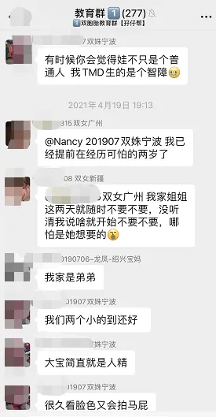
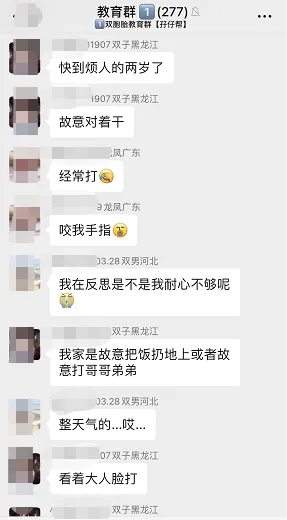
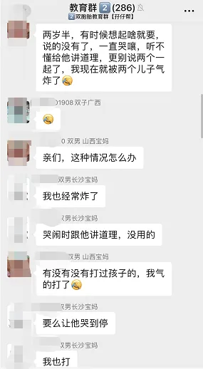
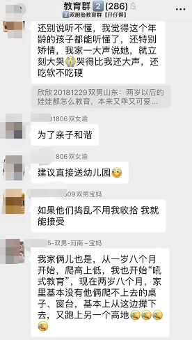
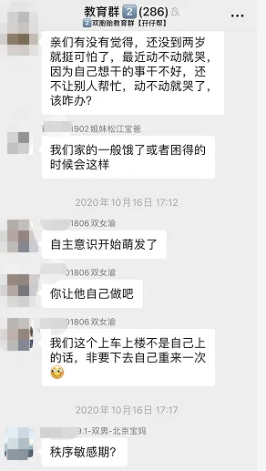

孖仔帮
公众号ID：twinsbang
关注
文|圆圈妈
网图|侵删
经常有妈妈问，养育双胞胎最难的时期是什么时候？我曾经以为最难的是第一年，没想到更难的还在后头，那就是可怕的两岁。
一个无知的小婴儿，但凡他还老老实实地躺着，就不会有太大的问题，你总有办法让他安静下来，但是2岁的孩子，能跑能跳，超级好动，精力旺盛，固执倔强，凡事都跟你唱反调，仿佛不管你怎么做，做什么，都拿他们没辙，有时运气不好还会被他们10级的破坏力秒成渣。
我们的双胞胎教育群里经常有妈妈吐槽，双胞胎到了2岁就特别难搞，这时候的他们不再是乖宝宝，经常无缘无故，大哭大闹，任性不听话，难带指数不亚于屎尿屁起飞的小月龄时期。
对此，我特别深有体会！
左右滑动查看更多
尽管我很清楚，这是每个孩子在成长过程中都会经历的一个特殊阶段，而我也做了许多功课，看了一大摞育儿书，包括正面管教啊，制定规则啊...然并卵用，亲子关系的小船该翻的时候还是翻了。
这是一段让我特别心累的阶段，不局限于两岁，而是从1岁半开始，圆圈哥俩就以混世小魔王的姿态，气势汹汹地向我袭来，杀得我措手不及，每一天都过得步步惊心。
总是违背自己的意愿，和自己对着干；
分明想要红色，偏偏选蓝色；
明明很想做某件事情，当问他，他又说不要；
对一切都要求一致，完整，比如玩具的摆放位置，顺序，方式他都要其保持不变；
家里的每件东西都必须放在他认为该放的地方，否则就生气；
要是约束他身体的活动，他一概不愿意接受，会发小脾气，会使小性子；
上一秒想吃动物饼干，下一秒又说想吃数字饼干；
口头禅都带一个【不】字：我不，我不要，不行，不可以，不能...
...
以上情形，那些家有1岁半双胞胎孩子的妈妈一定对此再熟悉不过了吧。
1
这边妈妈们已经对此崩溃不断，那另一边呢？给我们造成无穷无尽困扰的那两位肇事者呢？他们又是什么情况？他们在想什么?
以圆圈兄弟为例，由圆圈妈妈来揣摩下，2岁双胞胎宝宝的内心独白。
#穿衣服#圆圆的内心独白
我喜欢先穿上衣再穿裤子，我的弟圈圈喜欢先穿裤子再穿上衣，平时都是我们自己穿衣服的。
有一天妈妈着急出门，没经过我的同意就帮我穿衣服了，最可恶的是，妈妈又把我和圈圈搞混了，以为我是圈圈，先给我穿了裤子。
为此，我哭了一个上午。
#吃早餐#圈圈的内心独白
吃早餐的时候，我想自己用筷子夹面条吃。我的哥圆圆很早就会用筷子了，妈妈经常给他点赞，我也想跟他一样，我也想要妈妈表扬我，
可是妈妈却说，“不行，你搞的太脏了，我喂你吃！”
这让我感觉更加沮丧，为什么妈妈不让我做我想做的事情。
#玩玩具#圆圆的内心独白
我最开心的事情就是，和圆圆一起把一大推玩具从箱子里全都倒出来，那哐哐当当的声音特别让我们激动。
可是妈妈老说我们不应该把玩具全都倒出来，我偏不，我就喜欢把所有的玩具都拿出来玩。
有一次妈妈生气地把所有玩具都锁起来了，我抗议，大哭，尖叫，哀求，甚至打妈妈...都没有用。
我可怜的玩具，我现在最讨厌妈妈了！
#收拾玩具#圈圈的内心独白
我讨厌收玩具，每次妈妈叫我们收玩具，我就不知道该怎么做。
什么是收玩具啊？为什么要把玩具收起来？我们还没玩够呢。
可是妈妈一直在催我们快点收，又不告诉我们怎么收，我不懂妈妈到底要让我做什么，不知道该从哪里开始，捡起来的玩具又要放哪里，没人教我啊！
我看见圆圆直接坐在地板上哭了，我觉得很害怕，也哭了。
#分享玩具#圆圆的内心独白
我再也不跟邻居妹妹玩了，她把我和圈圈刚搭好的积木城堡推倒了，我很生气，很委屈找妈妈帮忙，可是妈妈却说，我应该学会分享，还叫我邀请妹妹一起玩。
可是，什么是分享，我不懂，我只知道我的玩具别人不可以乱动。圈圈不行，爸爸妈妈也不行，其他人更不行。
我也不要和妹妹一起玩儿，她又不会搭积木，还老是弄乱我的玩具。
我不喜欢分享。
#吃饭#圈圈的内心独白
每次吃饭，我就不开心，妈妈老是训我，说我浪费粮食，把饭菜吃得满身都是；
有时候她还会喂我吃，让我吃下这个，尝下那个，没等我张嘴，妈妈就把食物摆在我的嘴边，要求我必须吃下去，可是越是这样我就越不想吃。
其实我很饿的，我想要吃我想吃的东西，但妈妈给我吃的食物都不是我喜欢吃的，这让我更不想吃饭了。
我很烦躁，想摔筷子，又想要哭。觉得好累，好希望妈妈别再往我嘴里塞那么多食物了，我只需要她好好抱抱我。
#打架#圆圆的内心独白
我很喜欢跟圈圈一起玩，头碰头，脸贴脸，你掐我，我捏你…有时候我还会扯他的头发，压在他身上抢他的玩具，
结果妈妈总是把我们拉开，说我们不可以打架。我很委屈，我们只是在玩游戏而已，不是在打架，
我只是很好奇圈圈的头发，想去拉一下，拽一下，就是想试下骑在他身上什么感觉，
我们没有不喜欢，也没有生气，还玩得很开心，不明白为什么妈妈每次都阻止我们这样玩。
3
博主Katherine Backstrom在自己脸书上分享了一封由某位父母描述的两岁宝宝的“内心独白”。
“我今年2岁，我不可怕… 我只是沮丧，紧张，筋疲力尽，不知所措，困惑。我需要一个拥抱。”
“我不被允许练习走路，推，拉，拉拉链，扣扣子，倒水，吃饭，爬梯，跑步，扔东西的技能，但这些事才是我感兴趣，让我充满好奇的啊。偏偏，你们不让我做这些事。”
看到这位2岁宝宝的内心独白，我想起2岁时候的圆圈，他们总是在我训斥他们的时候，带着可怜的，自信心受到打击的神情，泪眼汪汪地看着我：“我学不会，我不懂，我做不到。”
瞬间觉得惭愧不已！
若是当初多一点理解，多一点包容，也许我会没那么焦虑。
其实仔细一对比，现在带着6岁的圆圈哥俩，才发现两岁的他们简直就像天使一样，温柔可爱。他们没有发飙的时候，会用软糯糯，萌哒哒的声音对我撒娇。
孩子依然是孩子，那些小孩天生具有的可爱，童稚，纯真的一面还是会存在于他们身上，我依然可以从中获得许多乐趣。
圈圈特别嘴甜，总能逗大家开心；
圆圆的行动变利索了，走起路像模像样，在屋子里转来转去，快乐得像只小喜鹊；
他们都很乐意帮助大人做事情，看我下班回家就给我拿拖鞋，看我在做家务还会拿扫把给我...
有时候，光是看他们两个无厘头的吵架斗嘴，莫名其妙的干架，突如其来的熊抱，两张一模一样的面孔，同时对着我笑...我都能被他们温暖一整天，所有的不愉快和疲惫都会一扫而空。
3
2岁的孩子正处在一个人生奇妙而又重要的过渡阶段，想要顺利熬过这个艰难的转折时期，最大的秘诀就是理解，理解孩子在这个重要阶段的发展本质及过程。
须知道，你是在和不知道什么才是对自己最好的孩子打交道，孩子不知道自己的父母在做什么，他只知道自己想要父母做什么，而且孩子的大部分要求对他们自己并无益处。
那些突如其来的尖叫怒意，坚决不从的叛逆挑衅，生龙活虎地东奔西跑....不过是正常现象而已，说白点就是，这不是你们家双胞胎才会有的个别行为，而是这个年龄阶段的孩子拥有的暂时现象。
这样说，我们会不会觉得心里踏实多了呢？
我知道，这说起来容易，做起来难，因为我也曾从他们那个可怕的2岁阶段中一路摸滚带爬，磕磕碰碰地熬过来的。
我们毕竟是成年人，都是以逻辑思维去分析事情，而不是直观感受，这就意味着我们做父母的是很难在每时每刻在每一件事情上都用小孩子的思维去理解他们的。
那么唯一的办法就是：爱他，了解他，无条件那种！
最后，我还想要告诉你一个真相！
熬过了可怕的2岁，还有恐怖的3岁，难缠的4岁，狂野的5岁，麻烦的6岁....
唯独2岁是可怕又可爱的！
所以，端正心态，且行且珍惜吧！
好好享受2岁双胞胎给咱们带来的一半海水一半火焰！
你做对了，孩子们才会做得对！
关于双胞胎的那些家庭教养迷思，欢迎来我们的双胞胎教育群一起探讨哦。
注：仅限家有1岁半双胞胎入群。
-END-
今日互动话题
#来爆料吧，你家的双胞胎现在有多可怕？#
评论区聊一聊呗！
微信公众号：孖仔帮
ID : twinsbang
专注双胞胎孕育，养育，教育经验分享
扫码关注我们
点一下你会更好看耶





